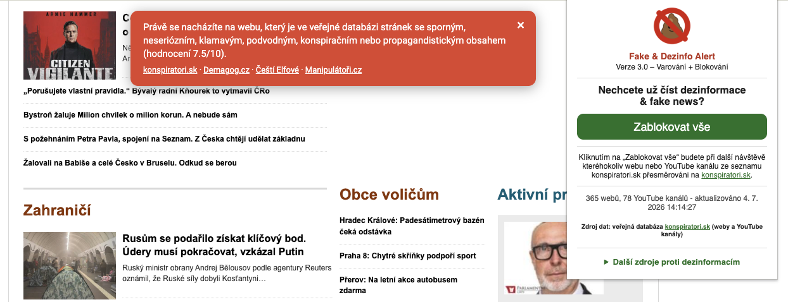
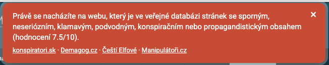
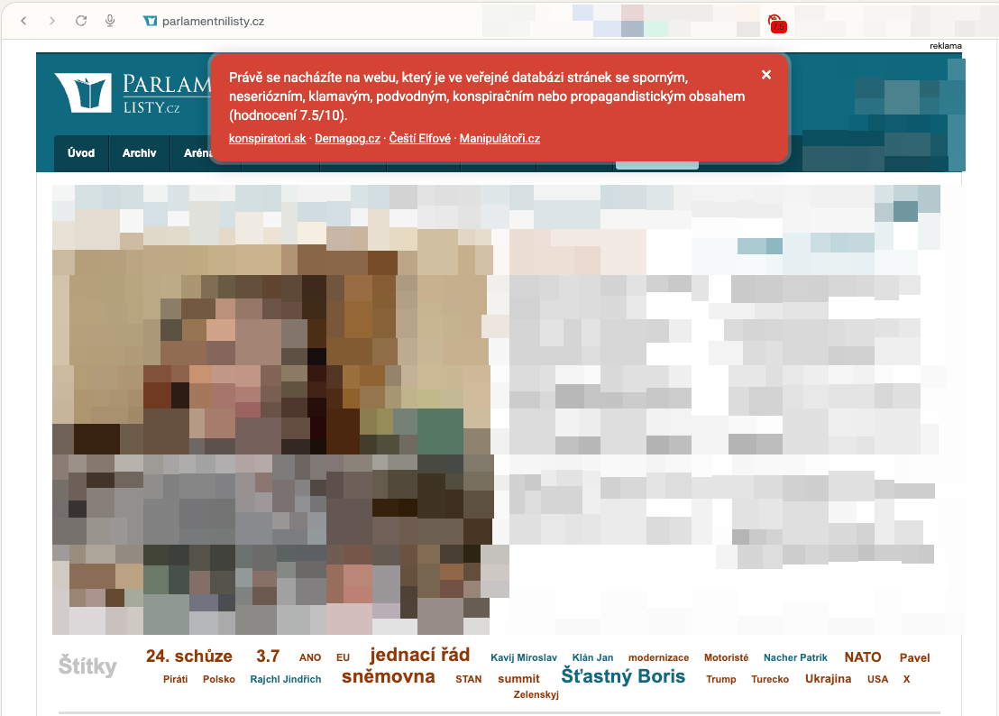
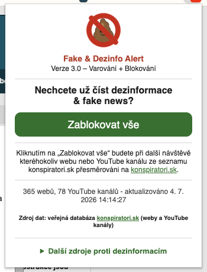
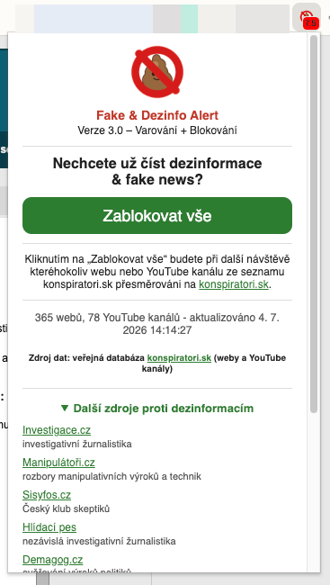
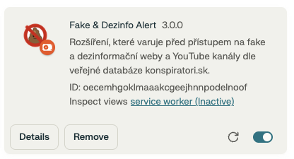

Rozšíření pro Chrome a Firefox, které varuje před weby a YouTube kanály z veřejné databáze konspiratori.sk – a na přání je umí i rovnou blokovat.

Výchozí nastavení jen upozorňuje. Zablokovat vše je jedno kliknutí v popupu, kdykoliv se rozhodnete přitvrdit.
Na stránce se sporným obsahem (nebo na YouTube kanálu ze seznamu) se zobrazí zavíratelný červený banner s hodnocením 0–10 a odkazy na konspiratori.sk a další fact-checkingové iniciativy. Stránka se dál normálně načte, jen s upozorněním navrch.

Po kliknutí na „Zablokovat vše“ v popupu se každá další návštěva webu nebo YouTube kanálu ze seznamu automaticky přesměruje na konspiratori.sk – místo stránky se rovnou zobrazí aktuální seznam sporných webů.
Ukázka varovného banneru přímo na reálném webu z databáze a popup s přehledem stavu seznamu.



Rozšíření zatím není v Chrome Web Storu ani na addons.mozilla.org – instaluje se ručně ze zdrojové složky (tzv. „rozbalené rozšíření“ / temporary add-on).
chrome://extensionsFake_and_Dezinfo_Alert-v3-Chrome
about:debugging#/runtime/this-firefoxmanifest.json ve složce Fake_and_Dezinfo_Alert-v3-FirefoxDočasný doplněk zmizí po zavření Firefoxu. Pro trvalou instalaci je potřeba nechat doplněk podepsat přes Mozilla Developer Hub (lze i jako neveřejný „Unlisted“).
Po instalaci chvíli trvá, než se na pozadí stáhne aktuální seznam – stav (počet webů a kanálů, čas poslední aktualizace) je vidět v popupu.
Manifest V3 na obou prohlížečích, žádné závislosti, žádné odesílání historie prohlížení.
| Soubor | Co dělá |
|---|---|
background.js |
Service worker (Chrome) / event page (Firefox). Jednou za 6 hodin stáhne aktuální seznam z konspiratori.sk a uloží ho do chrome.storage.local. Při selhání ponechá poslední funkční kopii. |
content.js |
Běží na každé navštívené stránce. Porovná doménu (a na YouTube i ID kanálu) s uloženým seznamem a podle zvoleného režimu zobrazí banner nebo přesměruje pryč. |
html.html + pops.js |
Popup s přepínačem mezi varováním a blokováním, stavem seznamu a odkazy na další zdroje. |
manifest.json |
Manifest V3 – na Chromu service_worker, na Firefoxu scripts (event page); jinak identický. |
Seznam se stahuje z oficiálního veřejného exportu konspiratori.sk určeného primárně pro vylučování reklamních umístění:
https://konspiratori.sk/static/lists/mixed_zoznam.csv
Obsahuje weby i YouTube kanály v jednom CSV: doména, hodnocení, odkaz na detail, URL YouTube kanálu, ID YouTube kanálu.
storage – uložení staženého seznamu a nastavení uživatelealarms – pravidelné plánované stahování seznamuhost_permissions (http://*/*, https://*/*) – potřeba pro kontrolní skript na každé stránce a stahování seznamu na pozadíRozšíření nikam neposílá historii prohlížení – porovnání probíhá čistě lokálně proti jednou staženému seznamu.